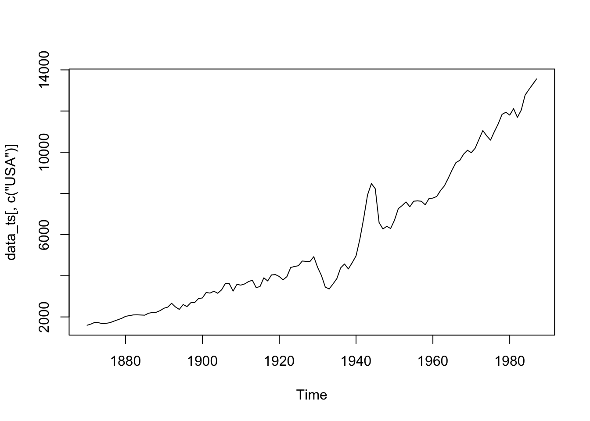
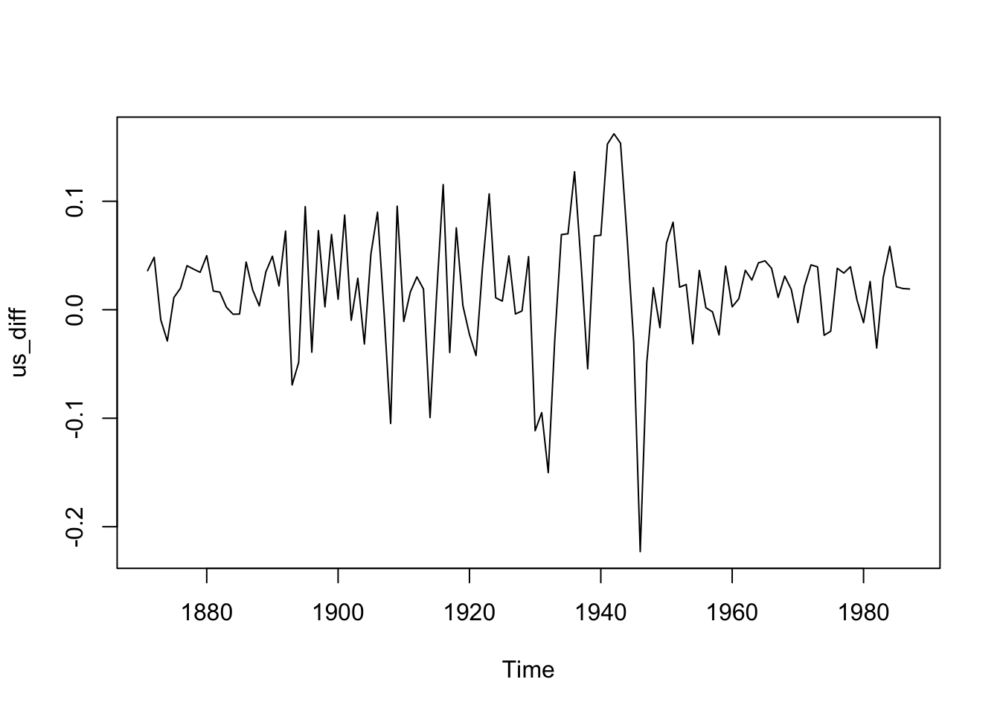
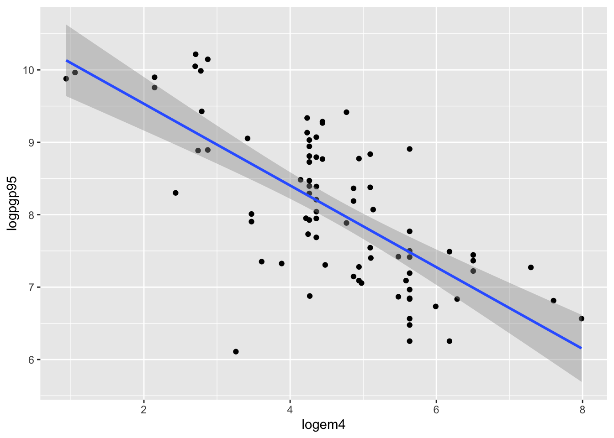
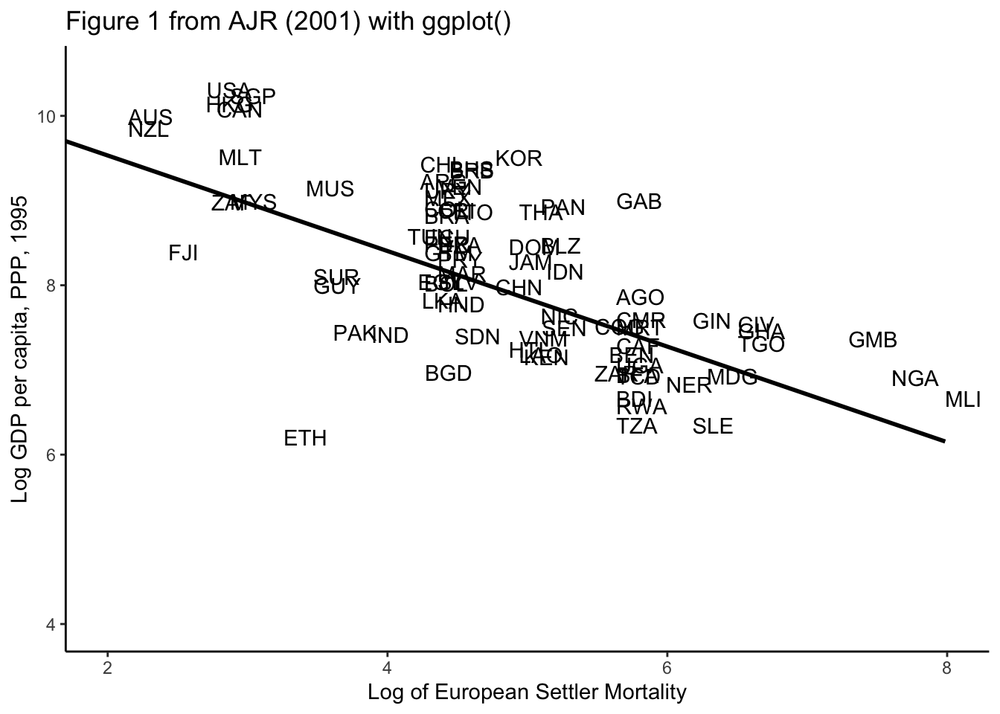

library(tseries)Registered S3 method overwritten by 'quantmod':
method from
as.zoo.data.frame zoo library(tseries)Registered S3 method overwritten by 'quantmod':
method from
as.zoo.data.frame zoo Import Data
data <- read.table("data/Per_Capita_GDP_Data_1870-1987.asc", header=T)
head(data)Bind the Column and Data set together = cbind()
startyear <- 1870
year <- seq(from=startyear, to= 1987, by=1)
data_GDP <- cbind(year, data)
head(data_GDP) # new year columnDefine Time Series
data_ts <- ts(data_GDP, startyear)
class(data_ts)[1] "mts" "ts" "matrix"[1] "mts" "ts" "matrix"MTS = multiple Time Series
apply diff
us_diff <- diff(log(data_ts[,"USA"]))=> Growth Rate of Log GDP in USA
Plot
plot(data_ts[,c("USA")])
plot(us_diff)
library(plm)Warning: Paket 'plm' wurde unter R Version 4.1.2 erstelltlibrary(stargazer)Warning: Paket 'stargazer' wurde unter R Version 4.1.2 erstellt
Please cite as: Hlavac, Marek (2022). stargazer: Well-Formatted Regression and Summary Statistics Tables. R package version 5.2.3. https://CRAN.R-project.org/package=stargazer data(wagepan, package='wooldridge') # directly from package witoout loading
head(wagepan)Get Panel Data from thsi with pdata.frame()
wagepan.p <- pdata.frame(wagepan, index=c("nr","year") ) #added HA: individual index and time index
pdim(wagepan.p)Balanced Panel: n = 545, T = 8, N = 4360Regressions with plm()
1) Simple linear Regression with all data pooled
wagemodel1 <- plm(lwage ~ married + union + exper, data=wagepan.p, model="pooling")2) now same as above but with controls
wagemodel2 <- plm(lwage ~ married + black + union + educ + exper, data=wagepan.p, model="pooling")3) estimate fixed effects model (based on “within-transformation” of data) <–> pooling model
NOTE: use for my Acemoglu Paper!!
wagemodel3 <- plm(lwage ~ married + union + educ + exper, data=wagepan.p, model="within")Summary
summary(wagemodel3)Oneway (individual) effect Within Model
Call:
plm(formula = lwage ~ married + union + educ + exper, data = wagepan.p,
model = "within")
Balanced Panel: n = 545, T = 8, N = 4360
Residuals:
Min. 1st Qu. Median 3rd Qu. Max.
-4.14628 -0.12503 0.01232 0.16205 1.48094
Coefficients:
Estimate Std. Error t-value Pr(>|t|)
married 0.0610384 0.0182929 3.3367 0.0008558 ***
union 0.0837910 0.0194140 4.3160 1.629e-05 ***
exper 0.0598672 0.0025835 23.1726 < 2.2e-16 ***
---
Signif. codes: 0 '***' 0.001 '**' 0.01 '*' 0.05 '.' 0.1 ' ' 1
Total Sum of Squares: 572.05
Residual Sum of Squares: 476.43
R-Squared: 0.16715
Adj. R-Squared: 0.047646
F-statistic: 255.026 on 3 and 3812 DF, p-value: < 2.22e-164) same, but with year dummy for shock absorption
Used with factor(year) for easy year incuding of the variables
wagemodel4 <- plm(lwage ~ married + black + union + educ + exper + factor(year), data=wagepan.p, model="pooling")Combine all and get stargazer to analyze it
mywagemodels <- list(wagemodel1,wagemodel2,wagemodel3,wagemodel4)
stargazer(
mywagemodels,
type="html"
#out="data/mywagemodels.html"
)| Dependent variable: | ||||
| lwage | ||||
| (1) | (2) | (3) | (4) | |
| married | 0.174*** | 0.113*** | 0.061*** | 0.111*** |
| (0.016) | (0.016) | (0.018) | (0.016) | |
| black | -0.145*** | -0.140*** | ||
| (0.023) | (0.023) | |||
| union | 0.169*** | 0.184*** | 0.084*** | 0.187*** |
| (0.018) | (0.017) | (0.019) | (0.017) | |
| educ | 0.103*** | 0.092*** | ||
| (0.004) | (0.005) | |||
| exper | 0.025*** | 0.050*** | 0.060*** | 0.030*** |
| (0.003) | (0.003) | (0.003) | (0.005) | |
| factor(year)1981 | 0.078*** | |||
| (0.030) | ||||
| factor(year)1982 | 0.097*** | |||
| (0.031) | ||||
| factor(year)1983 | 0.107*** | |||
| (0.033) | ||||
| factor(year)1984 | 0.140*** | |||
| (0.036) | ||||
| factor(year)1985 | 0.160*** | |||
| (0.040) | ||||
| factor(year)1986 | 0.188*** | |||
| (0.044) | ||||
| factor(year)1987 | 0.211*** | |||
| (0.048) | ||||
| Constant | 1.370*** | 0.031 | 0.164** | |
| (0.020) | (0.062) | (0.074) | ||
| Observations | 4,360 | 4,360 | 4,360 | 4,360 |
| R2 | 0.077 | 0.183 | 0.167 | 0.188 |
| Adjusted R2 | 0.076 | 0.183 | 0.048 | 0.185 |
| F Statistic | 120.319*** (df = 3; 4356) | 195.684*** (df = 5; 4354) | 255.026*** (df = 3; 3812) | 83.642*** (df = 12; 4347) |
| Note: | p<0.1; p<0.05; p<0.01 | |||
library(tidyverse)── Attaching packages ─────────────────────────────────────── tidyverse 1.3.1 ──✔ ggplot2 3.3.5 ✔ purrr 0.3.4
✔ tibble 3.1.5 ✔ dplyr 1.0.7
✔ tidyr 1.1.4 ✔ stringr 1.4.0
✔ readr 2.0.2 ✔ forcats 0.5.1── Conflicts ────────────────────────────────────────── tidyverse_conflicts() ──
✖ dplyr::between() masks plm::between()
✖ dplyr::filter() masks stats::filter()
✖ dplyr::lag() masks plm::lag(), stats::lag()
✖ dplyr::lead() masks plm::lead()Replicating the Data from AJR 2001
load("data/dataset_AJR2001.Rdata")
head(data)Simple:
ggplot(data=data, aes(x = logem4, y=logpgp95)) +
geom_point() +
geom_smooth(method="lm")`geom_smooth()` using formula 'y ~ x'Warning: Removed 82 rows containing non-finite values (stat_smooth).Warning: Removed 82 rows containing missing values (geom_point).
Advanced:
figure <- ggplot(data, aes(x = logem4, y=logpgp95)) + #Settler mortality and GDP per Cap
#geom_point() + #if we want to use points
geom_text(aes(label=data[,1]),hjust=0, vjust=0) + #if we want the country names as points
geom_smooth(color="black",method="lm", se=FALSE) +
theme_classic()+
coord_cartesian(xlim=c(2,8), ylim=c(4,10.5)) +
labs(
title="Figure 1 from AJR (2001) with ggplot()",
x="Log of European Settler Mortality",
y="Log GDP per capita, PPP, 1995"
)
figure`geom_smooth()` using formula 'y ~ x'Warning: Removed 82 rows containing non-finite values (stat_smooth).Warning: Removed 82 rows containing missing values (geom_text).